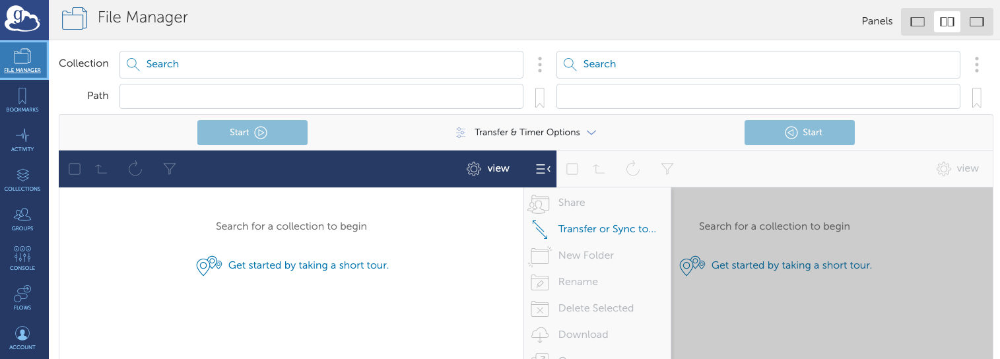
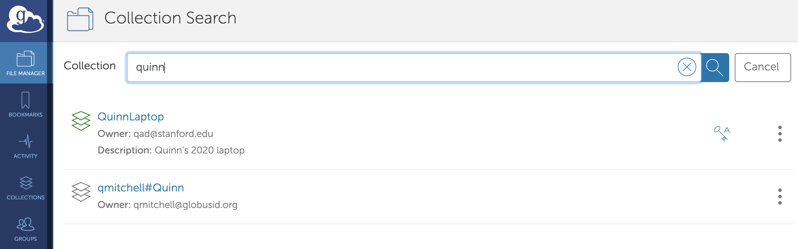

Data transfer
Contents
Data transfer#
Once you get a sense for the different kinds of storage locations available to you as part of the HPC cluster, your next step is to actually transfer the files you need to analyze.
You can expect your cluster will have a way for you to use the command line to transfer files, but for a lot of humanities scholars, that’s less comfortable than using something with a visual interface. In this section, we’ll cover various options that your research computing group may or may not provide for data transfer, to at least give you some language for what to ask for.
SFTP#
Many clusters will let you transfer files using SFTP, which you may be familiar with if you’ve ever set up a WordPress, Omeka, or other content management system website from scratch. To SFTP files, you need to install software on your computer; on Windows, WinSCP is a common option, and on Mac, try Cyberduck. You can find a basic tutorial for SFTP from David Birnbaum on Obdurodon.org.
🌲 SFTPing to Sherlock and Oak
Here’s the settings to SFTP into Sherlock:
Hostname:
sherlock.stanford.eduPort: 22
Username: SUNet ID
Password: SUNet ID password
By default, you will be put into your home directory (/home/users/your-sunet-id), but you can use the drop-down towards the top of the screen to navigate to other places. Your scratch is at /scratch/users/your-sunet-id.
SFTPing into Oak is the same, except the hostname is oak.stanford.edu, and after you log in, you’ll need to navigate to your group directory by going to groups/your-faculty-members-sunet-id.
Globus#
Globus is a service that universities can subscribe to, that allows users to transfer files between different storage locations (e.g. scratch vs HPC storage vs your home directory) using a web-based interface. If you want to also transfer files to and from your own computer, there’s a small application, Globus Connect Personal, that you need to install on your computer.
First, make sure that your research computing group supports Globus-based access to the HPC cluster (for scratch and your home directory) and/or HPC storage. Searching for your institution’s name + “research computing” + Globus should turn up something if you have access.
Setting up Globus Connect#
Next, install Globus Connect Personal. Once it’s installed, launch the software. A window will pop up with a Log In button. Click the button, and it will take you to a webpage where you can choose your institution from a drop-down menu, then log in as you usually do.
The next step is to create an endpoint for your computer. An endpoint is just a place where Globus can transfer data to or from. The HPC cluster should have an endpoint, HPC storage should have an endpoint, and there may be other endpoints within your institution (e.g. possibly run by the library for transferring data from their digitized collections) that you can get access to. The names of all endpoints are publicly visible (but not accessible) to everyone at your institution, so you might not want to call the endpoint for your laptop something embarrassing.
You can read the Globus instructions for how to set up an endpoint.
Globus Connect Personal may not automatically start every time you reboot your computer. Even though you’ll mostly be interacting with Globus through a browser, you do need to have Globus Connect running in order to successfully transfer files to and from your computer. If you log into Globus and try to connect to the endpoint for your computer, but Globus Connect isn’t running, the webpage will prompt you to start it.
Transferring files with Globus#
If you go to https://app.globus.org/file-manager, after you authenticate, you’ll see an interface with two panels by default. Those are two different storage locations, and you use the two panels to transfer files from one to the other. (There’s no “source” and “destination” relationship inherently between those two panels; you can go in either direction.)

The first step is to search for a collection. In Globus jargon, “collections” and “endpoints” have different functionality for people who run servers, but we can treat them as both meaning “somewhere you transfer data to and/or from”. If you click in the box labeled “Search”, you’ll see collections that you’ve recently accessed, or you can start typing and it will try to autocomplete options. When it autocompletes, it will also show the owner (by email address), which can be useful to confirm, for instance, that you’re trying to connect to your computer and not one with a similar endpoint name.

Your research computing group will tell you how to search for their endpoints.
🌲 Stanford endpoints
The Globus endpoint for Sherlock is SRCC Sherlock, from where you can access your and your group’s home and scratch directories. To access Oak, you can use SRCC Oak.
Once you select a collection for one of the panels, you’ll see the files in the default starting location for that collection. For your computer, this will be the home directory of your user account (on a Mac, /Users/your-user-name; on Windows, C:\Users\your-user-name.) You can navigate through your files using the panel connected to your computer by clicking through the folders that appear, or you can type something under Path. (For instance, to get to the Documents folder on a Mac, you’d set the path to be /~/Documents)
Find a file or folder that you would like to transfer, and hover over its name in the Globus panel. A checkbox will appear on the left, and you can check it to select it for transfer. Once you’ve checked at least one checkbox, and have connected to a collection in both panels, the blue Start button above that panel will turn dark blue. You can click it to begin transferring the files you’ve checked to the other pane.
While the transfer is going, you’ll see a little spinning wheel in the Globus icon on your computer (if you’re transferring files to or from your computer), and by default, you’ll get an email when the transfer is complete.
🌲 Navigating Sherlock & Oak
Here are the paths you can enter to get to different places within Sherlock (putting in the right SUNetID as needed):
Your scratch: /scratch/users/your-sunet-id
Your group’s scratch: /scratch/groups/groups/your-faculty-members-sunet-id
Your home (default location): /~/
When you connect to Oak, you won’t be automatically put into a folder where you can upload things; you’ll need to navigate around to find it. In most cases, if the faculty member you’re working with has bought storage on Oak, you’ll want to set the path to /oak/stanford/groups/your-faculty-members-sunet-id.
Command line#
If you’re very comfortable working with the command line, odds are you’ve found another guide to HPC by this point. If you want to limit your technical complexity to what’s necessary on the HPC side of things, try transferring your files with SFTP or Globus. If you want to use this as an opportunity to do more with the command line, it’s worth getting comfortable with using the command line to transfer files around your own computer first, to get the hang of it before you add in the remote server.
SCP#
SCP (secure copy protocol) is your “general-purpose” command-line command for transferring files. The Programming Historian command line tutorial has a section specifically about copying and deleting files that will get you some practice. The cp command covered in the Programming Historian tutorial works very similarly to the scp command used to transfer files to and from the server, with a little extra syntax to specify the location.
You’ll need to check with your research computing group for how to transfer files to your HPC cluster, but in general, the syntax looks like:
scp file-on-your-computer your-username@your-hpc-server:path-on-the-hpc-server-where-it-goes
Let’s imagine you have a text file, soseki-kokoro.txt, in your Documents directory on a Mac, and you want to transfer it to your HPC server. You can open a command line, and type scp /Users/your-username/Documents/soseki-kokoro.txt your-username@your-hpc-server:soseki-kokoro.txt
This will create a file with the same name, soseki-kokoro.txt, in your home directory on the HPC server.
On Windows, if you’re running Git Bash as recommended by the Programming Historian tutorial, your documents folder will be at c/users/your-username/documents, so you’d use the command scp c/users/your-username/documents/soseki-kokoro.txt your-username@your-hpc-server:soseki-kokoro.txt
Let’s say you have a whole folder of Sōseki novels (a folder called soseki) in your Documents folder, and you want to copy all of that to your home directory on the HPC server. On a Mac, you could use the command: scp /Users/your-username/Documents/soseki/ your-username@your-hpc-server:soseki/. (The Windows command is almost the same; just change the location of the folder to c/users/your-username/documents/soseki/)
You can also (and may have to) specify a location on the server other than your home directory as the destination for the file, but what that looks like concretely is going to vary a lot from system to system. See the Stanford information below as one example.
🌲 SCP to Sherlock and Oak
Using the same example file as above, here’s the command I (on a Mac) use to copy the soseki-kokoro.txt file to my home directory on Sherlock:
scp /Users/my-username/Documents/soseki-kokoro.txt my-sunet-id@login.sherlock.stanford.edu:soseki-kokoro.txt
If instead I wanted to move it to my scratch space, I’d change the destination to include the path to scratch:
scp /Users/my-username/Documents/soseki-kokoro.txt my-sunet-id@login.sherlock.stanford.edu:/scratch/users/my-sunet-id/soseki-kokoro.txt
If I wanted to send it to Oak, I’d need to include the path to my faculty member’s group directory:
scp /Users/my-username/Documents/soseki-kokoro.txt my-sunet-id@oak.stanford.edu:/groups/faculty-members-sunet-id/soseki-kokoro.txt
RSync#
Rsync (which has nothing to do with the R programming language, the “r” stands for “remote”) is good for a more specialized use case, but one that could be relevant for humanities scholars. Imagine you have a folder on your computer where you’ve been collecting texts that you want to analyze. You’ve already once transferred the folder (which contains several hundred files) to the HPC server using SFTP or Globus or even SCP. But over the last month, you’ve been adding more files, and you want to make sure that the new ones are available on the server, too. There are various ways you could make that happen: you could sort the files by date-modified and use SFTP or Globus to copy over the ones you added after the last time you transferred the files. Or you could use rsync from the command line. Rsync compares the timestamp and file size of all the files and folders in a directory you specify on your computer, with the corresponding files and folderes on the server, and only transfers the things that are new or have changed.
The syntax is very similar to scp, described above, except you need to give it a folder on both sides. So, running with the same example, where we want to transfer only the files we’ve updated in our soseki folder that exists in the Documents folder locally, and in our home folder on the HPC system:
rsync /Users/your-username/Documents/soseki/ your-username@your-hpc-server:soseki/